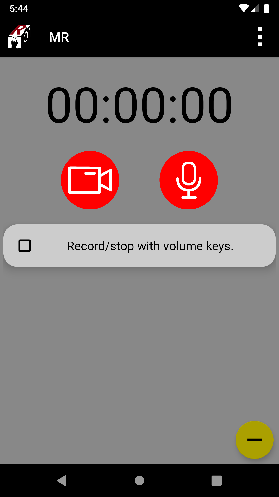
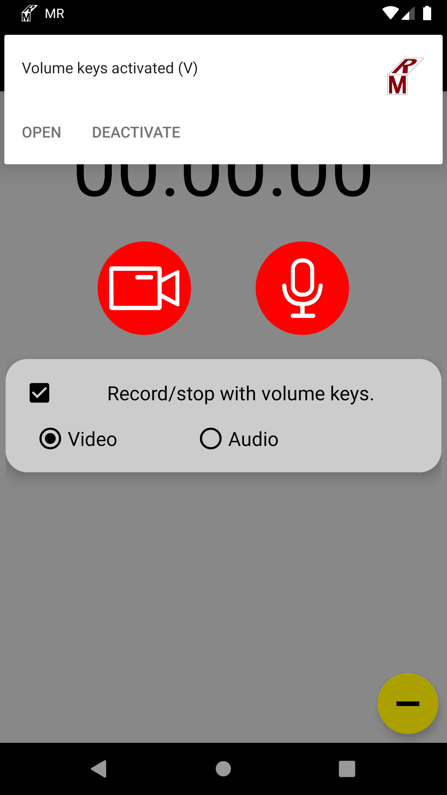
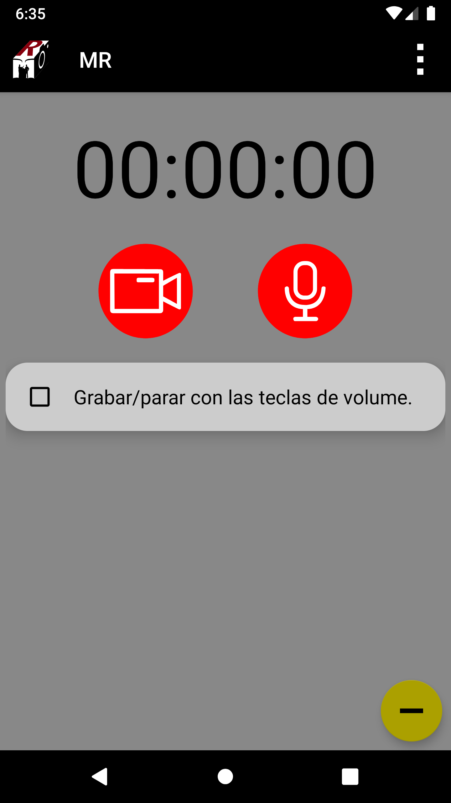
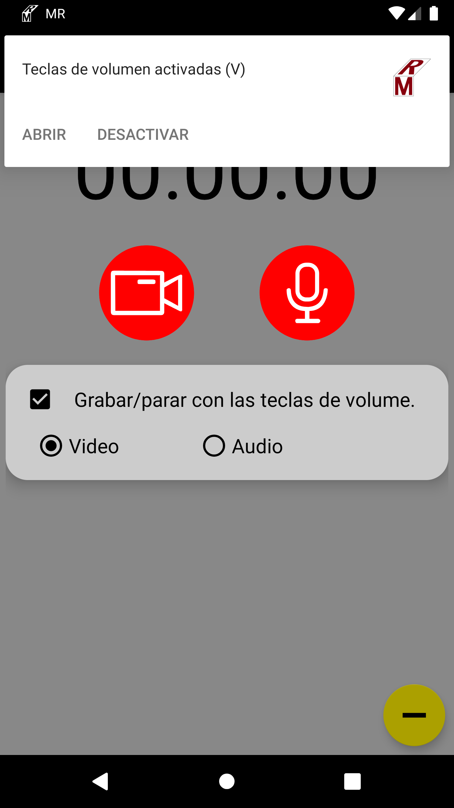

Once MR is installed and opened the following may happen:
MR is asking for permissions: Depending on the device and the Android version, MR might ask for permissions to record audio,
record videos, save files in your device and/or permission to allow display over other apps.
Those permissions are necessary for MR to work and the user has to grant MR those permisisons in order to be able to record media.
MR shows the message "MR does not have the required permissions to record": In this case MR needs that the user grants all the permissions
that MR needs to be able to record media.
MR is opened and no message is shown: In this case MR is ready to be used.
When MR is open and ready to use, the user sees the following screen


The user has the following options:
Go to "Settings" at the three vertical dots on the top right corner: Here you can set the general settings of MR, read information about MR, and access the extra options on paid versions.
In general settings, the user has the following options:
Select the recording camera from the list of cameras available in the device.
Set the maximum recording lenght for each recorded file.
Enable/disable vibration notifications when MR has started/stopped recording.
Enable/disable the option to hide files. When Hide MR files is active all the recorded files are hidden from the device's gallery.
Tap the red rounded camera button: MR starts to record video according to the current settings. The recorded time is shown on the upper part of the MR screen.
Tap the red rounded microphone button: MR starts to record audio according to the current settings. The recorded time is shown on the upper part of the MR screen.
Tap the "Record/stop with volume keys." check box: MR activates the functionality to record/stop with volume keys. When active, MR displays the options of audio or video and a notification will appear to remind the user that the volume keys are enabled.
Tap the yellow button with a "-" on the bottom right part of the screen: MR app is sent to the background. MR will be still active and the user can use other apps without interfering with MR tasks.
All the recordings done with MR are in the backgroung. This means that no previews are displayed on the screen while recording with MR.
MR recordings are not interrupted if the app is sent to the background (for instance, by pressing the back button, by tapping on the yellow button, or by switching to another app). Recording through volume keys can be done while MR is in the background.
Usually this can be done by opening MR again and granting the permissions
it asks. Permissions can be granted through the device's settings at Settings->Applications->MR->Permissions. In some cases you may also
need to go to Settings->Applications->MR->Advanced->Display over other apps in order to allow MR to work in the background.
All the recorded media is stored in the main storage of the device in the folder "MR". Inside the "MR" folder the user may
find the following folders:
The folder "V": Here MR stores all the recorded video files that are not hidden.
The folder "A": Here MR stores all the recorded audio files that are not hidden.
The folder ".V": Here MR stores all the recorded video files that are hidden.
The folder ".A": Here MR stores all the recorded audio files that are hidden.
Recorded files with the option "Hide MR files" enabled are not shown in the gallery and could not be shown on your device if the device is not
showing hidden files. The user has to enable the device's option to show hidden files.
Recorded files with the option "Hide MR files" disabled are shown in the gallery. It might take a while for new recorded files to appear in the gallery,
they will appear after the device has updated the contents of the gallery.
Yes. You can uncheck the Show notifications box of the app at Settings->Applications->MR
Yes. MR can record through the volume keys when they are active for recordings.
All MR files are named with the letters MR followed by a date and time. For instance, a video file could have the name MR_20190715_144115.mp4 and an audio file
could have the name MR_20190715_144115.3gp. The extension .mp4 is used for video files and .3gp for audio files.
No.
FAQ
Una vez MR es instalado y abierto puede pasar lo siguiente:
MR pregunta por permisos: Dependiendo del dispositivo y de la versión de Android, MR puede preguntar por permisos para grabar audio,
grabar video, guardar archivos en el dispositivo y/o permisos para ser mostrado sobre otras aplicaciones.
Estos permisos son necesarios para que MR funcione y el usuario debe otorgar estos permisos a MR para poder grabar.
MR muestra el mensaje "MR no tiene los permisos requeridos para grabar": En este caso MR necesita que el usuario le otorgue todos
los permisos que MR necesita para que le sea posible grabar.
MR es abierto y ningún mensaje es mostrado: En este caso MR está listo para funcionar.
Cuando MR está abierto y listo para ser usado, el usuario ve la siguiente pantalla:


El usuario tiene las siguientes opciones:
Ir a "Configuración" en los tres puntos verticales en la parte superior derecha: Aquí se puede modificar la configuración general, obtener información acerca de MR, y acceder las opciones extras en versiones pagas.
En configuración general el usuario tiene las siguientes opciones:
Seleccionar la cámara de grabación de la lista de cámaras disponibles en el dispositivo.
Escoger la máxima longitud de grabación para cada archivo grabado.
Activar/desactivar notificaciones de vibración al inicio/final de cada grabación.
Activar/desactivar la opción de ocultar archivos. Cuando la opción de Ocultar archivos MR está activada todos los archivos grabados estarán ocultos de la galería del dispositivo.
Presionar sobre el botón circular rojo con una cámara: MR comienza a grabar video de acuerdo a la configuración actual. El tiempo transcurrido de grabación es mostrado en la parte superior de la pantalla de MR.
Presionar sobre el botón circular rojo con un microfono: MR comienza a grabar audio de acuerdo a la configuración actual. El tiempo transcurrido de grabación es mostrado en la parte superior de la pantalla de MR.
Presionar sobre el cuadro de "Grabar/parar con las teclas de volume." : MR activa la funcionalidad de grabar/parar con las teclas de volume. En caso de estar activa, MR muestra las opciones de audio o video y una notificacion aparecera para recordar al usuario que las teclas de volume están activas.
Presionar el botón amarillo con un "-" en la parte inferior derecha de la pantalla: La aplicación MR es enviada a segundo plano. MR seguirá activa y el usuario puede usar otras aplicaciones sin intervenir con las tareas de MR.
Todas las grabaciones hechas con MR son en segundo plano. Esto significa que no hay vistas preliminares en la pantalla del dispositivo en el instante de hacer grabaciones por medio de MR.
Las grabaciones de MR no son interrumpidas cuando la aplicación es enviada a segundo plano (por ejemplo, cuando se presiona el botón "atras", cuando se presiona el botón amarillo, o cuando otra aplicacion está en primer plano). Grabaciones por medio de las teclas de volume se pueden hacer mientras MR está en segundo plano.
Usualmente los permisos pueden ser otorgados en el momento en que MR es abierto y pregunta al usuario sobre los permisos que requiere.
Para activar los permisos por medio de la configuración del dispositivo se debe ir a Configuración->Administrador de aplicaciones->MR->Permisos. En algunos casos el usuario también debe
ir a Configuración->Administrador de aplicaciones->MR->Avanzada->Mostrar sobre otras aplicaciones para permitir MR grabar en segundo plano.
Todos los archivos grabados son guardados en el almacenamiento principal del dispositivo en la carpeta "MR". Dentro de la carpeta "MR" el usuario puede
encontrar las siguientes carpetas:
La carpeta "V": En esta carpeta MR guarda todos los archivos de video grabados que no están ocultos.
La carpeta "A": En esta carpeta MR guarda todos los archivos de audio grabados que no están ocultos.
La carpeta ".V": En esta carpeta MR guarda todos los archivos de video grabados que están ocultos.
La carpeta ".A": En esta carpeta MR guarda todos los archivos de audio grabados que están ocultos.
Archivos grabados con la opción de "Ocultar archivos MR" activa no son mostrados en la galería y puede que no aparezcan en el dispositivo si este no tiene
la opción de mostrar archivos ocultos activada. El usuario debe activar en el dispositivo la opción de mostrar archivos ocultos.
Archivos grabados con la opción de "Ocultar archivos MR" desactivada serán mostrados en la galería. Puede tomar algunos instantes para que nuevos archivos grabados aparezcan en la galería,
estos aparecerán una vez el dispositivo actualice la galería.
Sí. Puede desmarcar el cuadro de Mostrar notificaciones en Configuración->Administrador de aplicaciones->MR
Sí. MR puede grabar a travez de las teclas de volume cuando están activas para grabaciones.
Todos los archivos de MR son nombrados con las letras MR segidos de fecha y hora. Por ejemplo, un archivo de video podría llamarse MR_20190715_144115.mp4
y un archivo de audio podría llamarse MR_20190715_144115.3gp. La extensión .mp4 es usada para archivos de video y .3gp para archivos de audio.